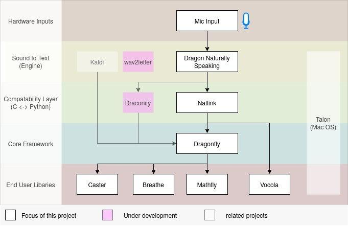

Dictation-toolbox
The Dictation-toolbox is a collection of "tools" that help speech recognition.
Some projects are centered around the Speech Recognition (SR) program "Dragon", which runs on Windows. The "Natlink" project plays a central role as "glue" between Dragon and the OpenSource projects as Vocola, Dragonfly (with Caster) and Unimacro.
Other projects are aiming at other SR programs, other operating systems.
All these projects are OpenSource, under the ... License.
Overview:

(Thanks to Jan Scheffczyk for making this scheme)
Comparison
project | Based on | Usage | Operating system | multi language |
|---|
Natlink | Dragon | user defined grammars or via Vocola, Unimacro, Caster, ... | Windows | n/a |
Dragonfly | Dragon or WSR (windows), ... | user defined grammars, or via Caster, Breathe, Mathfly, | Windows or ... | yes, but hardly implemented |
Caster | Dragonfly | grammars with CCR (continuous command recognition) for many applications | | yes, but hardly implemented |
Mathfly | Caster | making mathematical formula's with SR | | yes, but hardly implemented |
Vocola | Natlink or implementation in WSR | simple user defined commands | Windows | yes |
Unimacro | Natlink | a collection of - mostly global - grammars, which can be configured by end users | Windows | enx, nld, and extendable to other Dragon languages |
Aena | | connection to linux, when Dragon is in a Windows virtual machine | | |
Kaldi | | | | |
Talon | | | | |
|